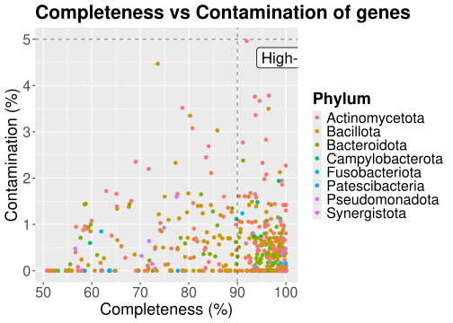

library("tidyverse")06_analysis_2
Analysis 2 - Completeness vs. contamination
This analysis will evaluate the relationship between the completeness and contamination levels. Completeness is a measure of how much of the organism’s full genome has been recovered in this assembly. On the other hand, contamination is a measure of how much foreign DNA (from other organisms or strains) is mixed into the assembled genome. These measures can be used to evaluate the quality of the assembled DNA genome.
1. Load libraries
2. Load data
Rows: 618 Columns: 25
── Column specification ────────────────────────────────────────────────────────
Delimiter: "\t"
chr (15): Genome, Genome_type, Country, Continent, Domain, Phylum, Class, Or...
dbl (10): Length, N_contigs, N50, GC_content, Completeness, Contamination, r...
ℹ Use `spec()` to retrieve the full column specification for this data.
ℹ Specify the column types or set `show_col_types = FALSE` to quiet this message.3. Plot completeness vs. contamination
Scatterplot to show the distribution between the completeness and contamination which is colored by phylum:
completeness_contamination_plot <- ggplot2::ggplot(
data = genome_metadata_aug,
mapping = ggplot2::aes(
x = Completeness,
y = Contamination,
color = Phylum)
) +
ggplot2::geom_point() +
ggplot2::geom_vline(
xintercept = 90,
linetype = "dashed",
alpha = 0.5) +
ggplot2::geom_hline(
yintercept = 5,
linetype = "dashed",
alpha = 0.5) +
ggplot2::annotate(
geom = "label",
x = 94,
y = 4.6,
label = "High-quality",
hjust = 0,
size = 6,
fill = "white",
alpha = 0.8,
label.size = 0.4) +
ggplot2::labs(
x = "Completeness (%)",
y = "Contamination (%)",
title = "Completeness vs Contamination of genes"
) +
ggplot2::theme(
plot.title = element_text(face = "bold",
size = 21),
axis.text = element_text(size = 16),
axis.title = element_text(size = 18),
legend.title = element_text(face = "bold",
size = 18),
legend.text = element_text(size = 16),
legend.key.size = unit(10, "pt"),
legend.spacing.y = unit(20, "pt"),
)
completeness_contamination_plot
This plot shows that the majority of the genes have a low contamination between 0 and 1% which indicates that the dataset contains mainly clean bins. Additionally the completeness levels are high. It ranges between 50 and 100% and a big cluster of the genes are between 90 and 100% completeness. This indicates that the dataset assembles are high-quality and that the MAGs are nearly complete. A common standard threshold for the contamination/completeness levels are that high-quality data have a completeness above 90% and a contamination below 5%. In our dataset, a large cluster of genomes fall into this category.
4. Saving plot
ggplot2::ggsave(
filename = "../results/06_key_plot_1.png",
plot = completeness_contamination_plot,
width = 16,
height = 9,
dpi = 300)